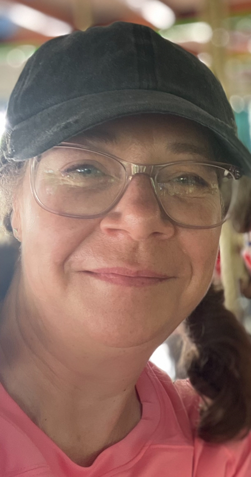

Hey there!
I'm pANNoramic-d8ta. With a passion for learning, helping others and art, I am a dedicated creative on the exciting Software Engineer path. Drawing from a wide professional career of documentation, instructional content and operations provides a strong foundation for problem solving, research and improving others experiences. Happily delving into the ever-evolving realm of web development, I am committed to continuous learning and contributing elegant design to the world.